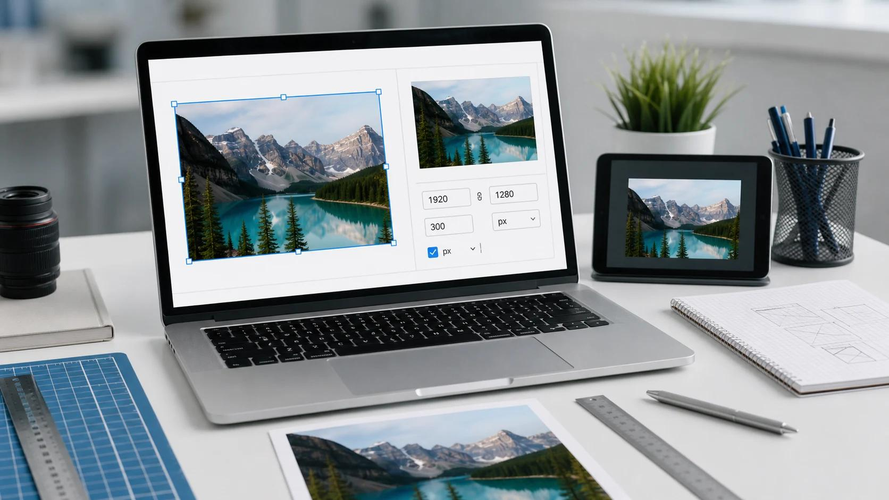
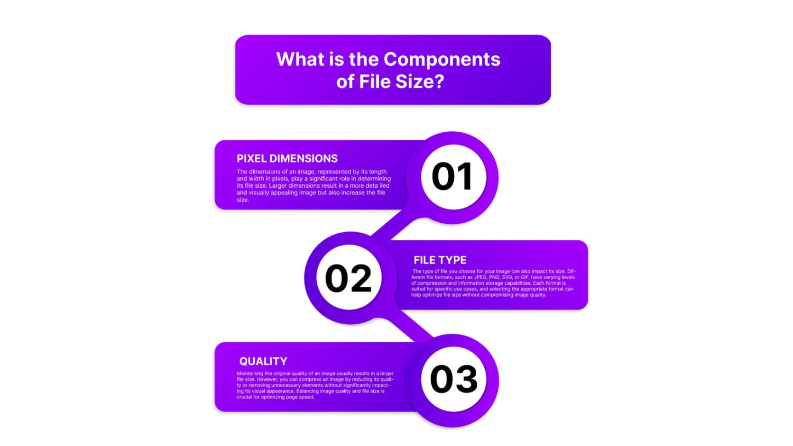
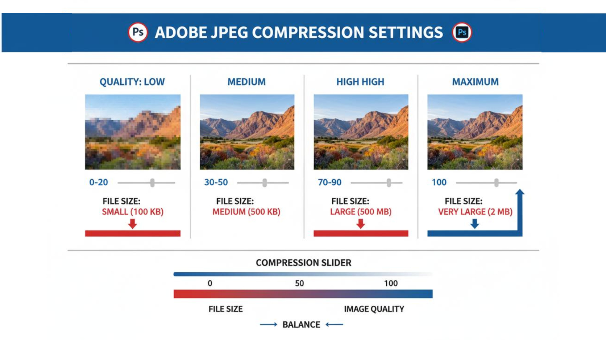
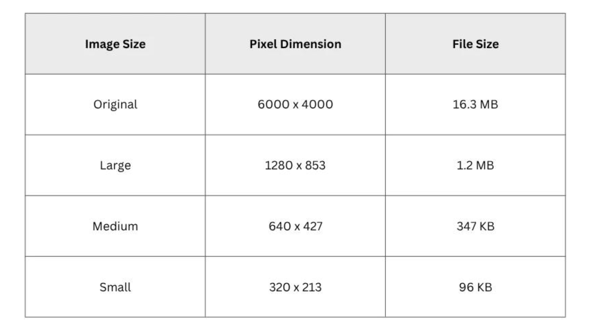

You had a 4000 px photo. You resized it to half the width. Surely the file should now be tiny. But the size barely dropped, or in some cases it even went up.
If resizing an image does not reduce the file size the way you expected, you're not doing anything wrong. Pixel dimensions are only one of four things that decide file size. This guide separates them so you can see which one is holding your file back.
The Short Answer
Resizing changes the number of pixels. File size also depends on compression quality, image format, image content, and metadata. If any of those work against you, a smaller image can still produce a large file.
The most common reasons:
- The resized image was saved at a higher quality setting than the original
- The photo has lots of fine detail or noise, which doesn't compress well
- The format is lossless (like PNG), so quality settings don't shrink it
- The tool kept extra data (metadata) or color profiles
- File size doesn't shrink in a straight line with pixel count
Four Things That Control File Size
Most people only think about the first one.
| Factor | What it is | Does resizing change it? |
|---|---|---|
| Pixel dimensions | Width × height of the image | Yes, this is what resizing changes |
| Compression quality | How strongly the file is compressed | Not by itself, the save setting decides |
| Format | JPG, PNG, WebP, AVIF, etc. | Only if you change it |
| Metadata | Camera info, color profile, extra data | Depends on the tool |
Keep these four apart in your head and the problem gets much easier to solve.

Factor 1: Pixel Dimensions
Pixel count is width × height. Halving both width and height cuts the pixel count to one quarter, not one half.
| Dimensions | Pixels | Compared with 4000 × 3000 |
|---|---|---|
| 4000 × 3000 | 12,000,000 | 100% |
| 2000 × 1500 | 3,000,000 | 25% |
| 1000 × 750 | 750,000 | about 6% |
(This is simple multiplication, so it's accurate.)
You might expect the file to shrink to 25% as well. Often it doesn't, and the next factors explain why.
Factor 2: Compression Quality
When you save a JPG, you choose how much detail to throw away. Many tools pick a high default quality. If your original camera photo was saved at a moderate quality, and your resize tool re-saves it at a very high one, the new file can be much heavier than the pixel count suggests.
A rough way to think about it:
- Fewer pixels, same quality setting: smaller file
- Fewer pixels, higher quality setting: possibly no saving at all
Quality is a separate dial. Resizing doesn't touch it unless the tool does.
The fix: Lower the quality a little after resizing, and compare at 100% zoom. Even a modest reduction often makes a big difference.

Factor 3: Format
Format decides how the pixels are stored.
| Format | Compression | Resizing effect on size |
|---|---|---|
| JPG | Lossy, quality adjustable | Usually drops, depends on quality |
| PNG | Lossless | Drops with pixels, but no quality slider to tune |
| WebP | Lossy or lossless | Depends on the mode used |
| AVIF | Lossy or lossless | Depends on the mode and tool |
A resized PNG is the classic surprise. PNG doesn't throw detail away, so there is no quality dial. A photo saved as PNG stays large even when the pixel count falls. For photos, converting to JPG or WebP is often what actually reduces size. We cover that in why an image gets bigger after converting to JPG.
Factor 4: Image Content
Two images with the same dimensions can have very different file sizes.
- A smooth image (blue sky, plain wall, simple background) compresses very well
- A detailed or noisy image (grass, fabric, night photos with grain, crowds) compresses poorly
When you resize, detail doesn't vanish evenly. A shrunken image can pack the same amount of texture into fewer pixels, so each pixel carries more detail and compresses less efficiently. This is one reason size doesn't fall in proportion to pixel count.
Factor 5: Metadata and Extra Data
A photo file contains more than pixels. It can include:
- Camera and lens details (EXIF)
- Date and, sometimes, location
- Color profiles
- Embedded preview thumbnails
For a large photo this is a small part of the total. For a small image, though, extra data can be a noticeable share of the file. Some resize tools keep it, others strip it. If you resize a photo down to a small thumbnail and the file is still bigger than expected, metadata is one place to look.
Tip: if you share photos publicly, removing location data is a privacy bonus too.
Why File Size Doesn't Shrink in a Straight Line
Even with the same quality setting, the relationship between pixels and bytes isn't a simple ratio.
- Compression works best on large, smooth areas, and downscaling can change that
- Small images have a minimum fixed overhead (headers, tables, metadata)
- Resampling can sharpen edges, which compresses less well
- The original may already have been compressed efficiently, leaving little to gain
So treat pixel count as a rough guide, not a calculator.
Quick Diagnosis: Why Is My Resized Image Still Big?
| What you see | Likely cause | What to try |
|---|---|---|
| Pixels dropped by 75%, size dropped only a little | Quality setting too high on re-save | Lower quality and compare |
| Resized PNG is still large | Lossless format | Convert photos to JPG or WebP |
| Resized file is bigger than the original | Original was heavily compressed, new one is not | Save at a lower quality setting |
| Detailed, grainy photo stays heavy | Content compresses poorly | Reduce dimensions more, or lower quality |
| Small image, size still higher than expected | Metadata or profile overhead | Strip metadata if possible |
| Size hasn't changed at all | Only DPI changed, not pixels | Change the actual width and height |
A Common Trap: Changing DPI Doesn't Change Pixels
Some tools show a DPI or PPI setting. Changing it from 300 to 72 does not remove any pixels. It only changes the print size information stored in the file. If your goal is a smaller file, change the pixel width and height, not just the DPI label.
Test It Yourself
Do a simple comparison with one of your own photos:
- Note the original pixel dimensions and file size in bytes (or KB).
- Resize it to about half the width, keeping the same format and quality setting if your tool allows.
- Record the new pixel dimensions and file size.
- Resize again at a much smaller width, and record it.
- Save one version at a lower quality, and record the size.
- Compare each at 100% zoom.
Fill in your own results:
| Version | Pixel dimensions | Format | Quality setting | File size (bytes/KB) | Size vs original | Looks OK? |
|---|---|---|---|---|---|---|
| Original | 100% | |||||
| Resized (about 50% width) | ||||||
| Resized (about 25% width) | ||||||
| Resized + lower quality |
Compare the pixel percentage with the file size percentage. If they don't match, one of the four factors is the reason.

Resize First or Compress First?
For most photos, resize first, then compress. Resizing removes pixels you don't need, and compression then reduces the remaining data. Doing it the other way round wastes effort, because you compress pixels that you were going to delete anyway.
Our guide on why a small photo can still load slowly explains why dimensions matter for websites even when the KB number looks small.
Step-by-Step: How to Get a Smaller File
- Check the current size. Note the pixel dimensions and file size.
- Decide the size you really need. Match the dimensions to where the image will be shown or uploaded.
- Resize to those dimensions using the Image Resizer.
- Check the format. For photos, JPG or WebP usually beats PNG.
- Lower the quality slightly and compare at 100% zoom.
- Compress with the Image Compressor if you still need a smaller file.
- Compare against your target (for example, a portal's KB limit) and adjust.
Common Mistakes
- Expecting file size to fall at the same rate as pixel count
- Resizing a PNG photo and keeping it as PNG
- Saving at maximum quality "to be safe"
- Changing only the DPI number
- Judging the result without zooming in
- Resizing a small image to a larger size (upscaling adds pixels, not detail)
- Re-saving the same JPG over and over
Quick Summary
- Resizing changes pixel count. File size also depends on quality, format, content, and metadata.
- Halving width and height cuts pixels to a quarter, but file size rarely drops exactly that much.
- A high quality setting on re-save can cancel out the savings.
- PNG photos stay large because PNG is lossless.
- Changing DPI doesn't change pixels.
- Resize first, then compress.
Frequently asked questions
Does resizing an image reduce its file size?
Why is my resized image bigger than the original?
Should I resize or compress first?
Does changing DPI reduce file size?
Why is my PNG still large after resizing?
How can I reduce an image to a specific KB?
Does metadata make a big difference?
Conclusion
When resizing doesn't shrink a file the way you hoped, the pixels are only part of the picture. Check the quality setting, the format, the image content, and the metadata. Fix the factor that's holding you back, and compare at 100% zoom before you share.
Ready to try? Resize your photo with the QuickToolsPK Image Resizer, then run it through the Image Compressor if you need it smaller.